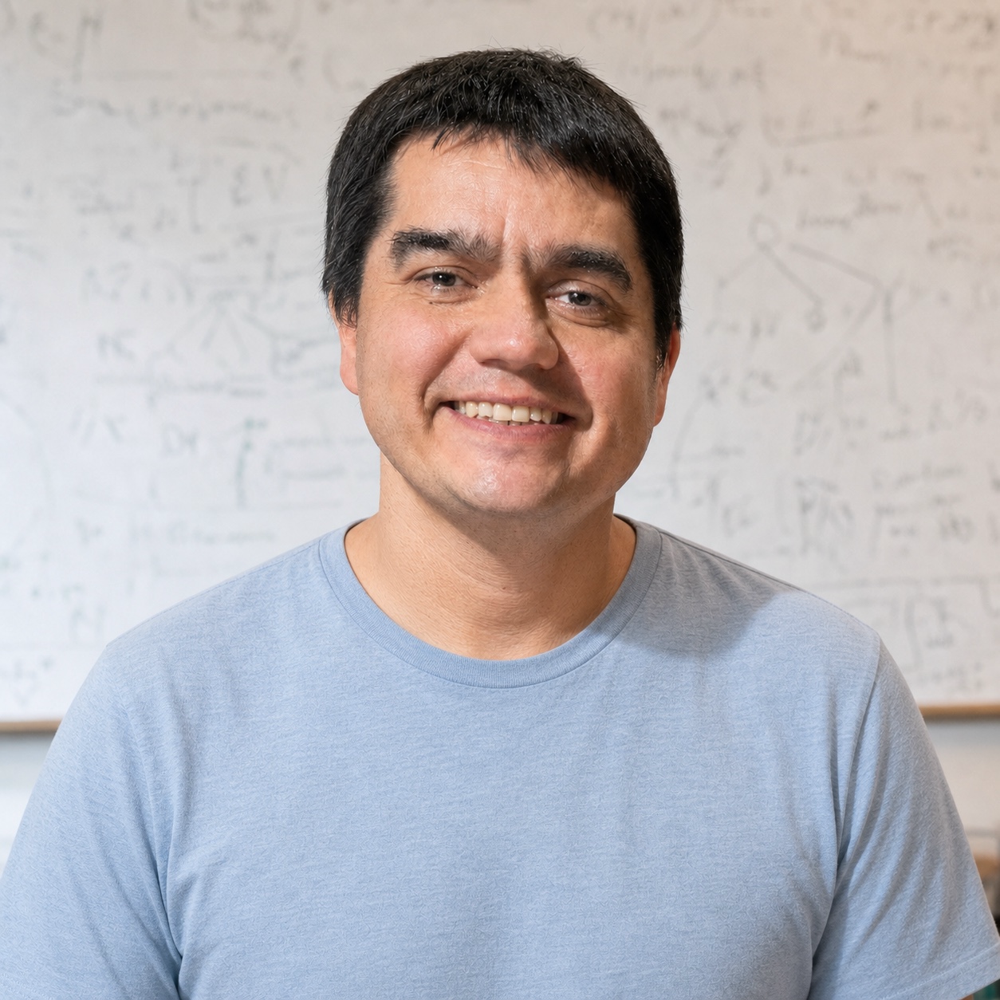

Co-founder, ViserAI
Applying learning systems and frontier AI to understand how companies and industries may evolve.

I am co-founder of ViserAI, a frontier AI lab developing learning systems for the financial markets.
My research is focused on building AI systems that learn from experience on their own, particularly reinforcement learning and self-supervised learning. I study how agents can form useful representations of the world, explore intelligently, and improve through interaction rather than relying on answers being supplied by humans.
After spending most of my career on these questions at Google DeepMind and Cohere, I am now applying this research at ViserAI. My team and I are building AI that learns how companies and industries may evolve as technology, consumer behavior, and the wider economy change. We want to use this technology to identify important risks and opportunities earlier and help promising companies realize their potential.
Applying learning systems and frontier AI to understand how companies and industries may evolve.
Worked on frontier language models and methods that enable models to question, revisit, and improve their own answers.
Led and contributed to research in self-supervised learning, reinforcement learning, world models, and exploration.
Published research spanning machine learning, control, computational neuroscience, and neural data analysis.
PhD in Natural Sciences and Biophysics, Radboud University Nijmegen. MSc in Control Engineering, University of Tehran.
A central question connects this work: how can an intelligent system build an understanding of its world and improve through experience?
Developed methods that learn useful representations without human-provided labels and help agents build internal models by predicting their environment and the consequences of their actions.
BYOL, PBL, World Discovery Models, Neural Belief Representations
Developed approaches that help agents balance what they know with what they need to investigate.
Noisy Networks, BYOL-Explore, Minimax RL
Worked on methods that teach frontier models not to settle for their first answer, but to challenge and refine it.
SRPO